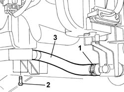

5040C68 CONDENSATE DRAIN PIPE AND ANITI-CONDENSATION FILTER - ARRANGE
- Path
- Procedures > 50 AUXILIARY UNITS > 5040 AIR CONDITIONING CASING AND COMPONENTS > 5040C AIR CONDITIONER BOX AND COMPONENTS > 5040C68 CONDENSATE DRAIN PIPE AND ANITI-CONDENSATION FILTER - ARRANGE
- Kind
- repair procedure (removal / refitting; the operation number is the code)
- Applies to
- all engines; all production periods
- Interactive page
- https://sloeber94.github.io/elrnDB-fDct/en/#/244001302
Applies to: all engines; all production periods
 Removing
Removing
 Refitting
RefittingOp. 7040A18 GLOVE COMPARTMENT ON FACIA - ARRANGE
Op. 7040A19 CUSHION PADDING - R R
1. Remove the retaining band.
- Disconnect the condensation drainage pipe from the condensation drainage connector.
2. Undo the fixing bolts.
3. Remove the condensation drainage pipe and the condensation filter.

Applies to: all engines; all production periods
Refitting
Removing- Position the condensation drainage pipe and the condensation filter and tighten the fixing bolts.
- Connect the condensation drainage pipe to the condensation drainage connector and secure it using a suitable band.